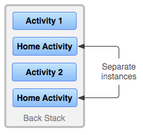

其实以为，安卓只需要在界面上进行了解就行了，其实不然。大多数时候，我们都是在JAVA进行业务逻辑的处理和数据的处理，与显示层其实没有什么太大的关系。更容易让我们忽略的是，如果对于内存管理，生命周期没有一定了解的话，总是会出现很多莫名其妙的问题。比如，基于网络获取的数据给存储到了 View或者 Activity内，那么，在安卓把它进行回收了的时候，就总是会出现 NPE 错误了。
所以有必要对此进行一个了解及记录。
进程
来自安卓官方的文档，开宗明义的就描述了，安卓是一个什么样的系统。应用基础 一文中的描述如下：
- Android 操作系统是一种多用户 Linux 系统，其中的每个应用都是一个不同的用户；
- 默认情况下，系统会为每个应用分配一个唯一的 Linux 用户 ID（该 ID 仅由系统使用，应用并不知晓）。系统为应用中的所有文件设置权限，使得只有分配给该应用的用户 ID 才能访问这些文件；
- 每个进程都具有自己的虚拟机 (VM)，因此应用代码是在与其他应用隔离的环境中运行；
- 默认情况下，每个应用都在其自己的 Linux 进程内运行。Android 会在需要执行任何应用组件时启动该进程，然后在不再需要该进程或系统必须为其他应用恢复内存时关闭该进程。
上面的描述说明，安卓，首先其是一个Linux系统，并且，利用安卓的用户权限管理机制为每个应用赋予一个不同的用户。
每个应用，有自己的进程，有自己的内存空间及虚拟机。对于应用的进程。
在 进程与应用生命周期一文中也描述了一些很恼火的问题。
进程
多数情况下，每个应用在其自己的Linux进程内运行。这个进程在应用的某些代码需要运行的时候建立，只有其应用不需要，或者系统需要释放内存来供其他应用使用的时候会结束。
一个不太寻常和安卓的基础特征是，应用进程的生命周期不是直接由其自己控制的。系统通过一系列的因素来决定其生命周期，如系统已知此应用的运行部分，对用户的重要程度，及系统有多少内存可用。
开发者需要明白各个组件（Activity，Service，BroadcastReceiver）是怎么样影响应用的生命周期的。不正确的使用这些组件可能会导致应用在执行重要活动的时候被系统给KIll
一个常见的进程生命周期Bug是 BroadcastReceiver 在其 BroadcastReceiver.onReceive() 方法中收到一个 intent 时启动了一个新的线程，然后就从方法中返回了。其返回后，系统就会认为，BroadcastReceiver 不再活跃，其就会将此进程标记为不再需要的（除非有其他应用组件还是活跃的）。所以，系统可能会在将来的某个时候就释放内存，同时，也会结束派生出来的线程。典型的解决办法是从BroadcaseReceiver内调度一个JobService，这样系统就会知道依然有活跃的任务存在。
为了确定哪个进程在内存低的时候被Kill，安卓会把每个进程放到一个 重要性等级中，其参考依据是应用进程中运行的组件及组件状态。下面是重要级别列表（从高至低）：
- 前台进程：当前用户正在交互的进程。很多组件会导致进程被认为是前台的。下面的任一条件满足，应用进程就会被认为是前台的：
运行一个屏幕最顶部与用户正在交互的 Activity（onResume()被调用）。
BroadcastReceiver 正在运行（执行 BroadcastReceiver.onReceive()中）
有一个Sevice并且在执行其中一个回调函数的代码。（Service.onCreate(), Service.onStart(), or Service.onDestroy()）
系统中这样的进程应该只有少数几个，只有在内存到达连这些进程都不能继续运行的时候才会杀掉这种进程。通常，在这个时候，系统已经到了一个 内存换页状态，所以需要这个杀掉进程的动作来保证用户交互的响应性。
- 可见进程：在做一些用户可以感受到的事情的进程，杀掉这样的进程对用户来说体验不好。满足下面条件的进程被认为是可见的：
运行一个用户可见，但不在前台的 Activity，（如调用了 onPause()方法）。这是有可能发生的，比如前台进程是一个对话框，而其允许先前的Activity在其后面。
有一个 Service 以前台服务运行，通过 Service.startForeground()执行（这个方法会请求系统向对待用户敏感事件一样对待，或者向对用户可见一样）。
其内用一个系统使用的，对用户来说能感受到的服务，比如 Live wallpaper，输入法服务等。
服务进程： 此进程内包含一个已经调用了
startService()的Service。虽然这些过程对用户来说不是直接可见的，但他们通常在做用户关心的事情（如后台网络数据上传或下载），所以系统会保持这样的进程运行，除非位于其上的两个类型进程没有足够的内存了。
长时间运行（例如30分钟或更长时间）的服务可能把重要性降级，以允许它们的进程下降到下面描述的缓存的LRU列表。 这有助于避免由于内存泄漏或其他问题而长时间运行的服务消耗大量内存，导致系统无法有效使用缓存进程。缓存进程：当前不需要的进程，系统想什么干掉他就什么时候干掉。在正常运行的系统中，这些是内存管理中唯一涉及的过程：运行良好的系统将始终有多个高速缓存的进程可用（以便在应用程序之间进行更高效的切换），并根据需要定期清除最旧的进程。 只有在非常危急的情况下（也就是不希望出现的情况），系统才能达到所有高速缓存进程都被终止的程度，并且它必须开始查杀服务进程。
这些进程通常包含一个或多个用户当前不可见的Activity实例（onStop（）方法已被调用并返回）。 如果他们正确地实施了他们的活动生命周期（请参阅活动以获取更多详细信息），那么当系统终止此类流程时，它不会影响用户在返回到该应用程序时的体验：当相关活动重新创建时，它可以恢复先前保存的状态 一个新的过程。
任务和回退栈
原文：任务和返回栈
在用户执行一个特定的任务的时候，可能会和很多的 Activity 交互，这一系列的 Activity 就是 任务。而任务的具体实现形式，在安卓内就叫 回退栈。 以 先入后出 的形式进行组织。
设备主屏幕是大多数任务的起点。当用户触摸应用启动器中的图标（或主屏幕上的快捷方式）时，该应用的任务将出现在前台。 如果应用不存在任务（应用最近未曾使用），则会创建一个新任务，并且该应用的“主”Activity 将作为堆栈中的根 Activity 打开。
当前 Activity 启动另一个 Activity 时，该新 Activity 会被推送到堆栈顶部，成为焦点所在。 前一个 Activity 仍保留在堆栈中，但是处于停止状态。Activity 停止时，系统会保持其用户界面的当前状态。 用户按“返回”按钮时，当前 Activity 会从堆栈顶部弹出（Activity 被销毁），而前一个 Activity 恢复执行（恢复其 UI 的前一状态）。 堆栈中的 Activity 永远不会重新排列，仅推入和弹出堆栈：由当前 Activity 启动时推入堆栈；用户使用“返回”按钮退出时弹出堆栈。 因此，返回栈以“后进先出”对象结构运行。 图 1 通过时间线显示 Activity 之间的进度以及每个时间点的当前返回栈，直观呈现了这种行为。

如果用户继续按“返回”，堆栈中的相应 Activity 就会弹出，以显示前一个 Activity，直到用户返回主屏幕为止（或者，返回任务开始时正在运行的任意 Activity）。 当所有 Activity 均从堆栈中移除后，任务即不复存在。


任务是一个有机整体，当用户开始新任务或通过“主页”按钮转到主屏幕时，可以移动到“后台”。 尽管在后台时，该任务中的所有 Activity 全部停止，但是任务的返回栈仍旧不变，也就是说，当另一个任务发生时，该任务仅仅失去焦点而已，如图 2 中所示。然后，任务可以返回到“前台”，用户就能够回到离开时的状态。 例如，假设当前任务（任务 A）的堆栈中有三个 Activity，即当前 Activity 下方还有两个 Activity。 用户先按“主页”按钮，然后从应用启动器启动新应用。 显示主屏幕时，任务 A 进入后台。新应用启动时，系统会使用自己的 Activity 堆栈为该应用启动一个任务（任务 B）。与该应用交互之后，用户再次返回主屏幕并选择最初启动任务 A 的应用。现在，任务 A 出现在前台，其堆栈中的所有三个 Activity 保持不变，而位于堆栈顶部的 Activity 则会恢复执行。 此时，用户还可以通过转到主屏幕并选择启动该任务的应用图标（或者，通过从概览屏幕选择该应用的任务）切换回任务 B。这是 Android 系统中的一个多任务示例。
注：后台可以同时运行多个任务。但是，如果用户同时运行多个后台任务，则系统可能会开始销毁后台 Activity，以回收内存资源，从而导致 Activity 状态丢失。请参阅下面有关 Activity 状态的部分。
由于返回栈中的 Activity 永远不会重新排列，因此如果应用允许用户从多个 Activity 中启动特定 Activity，则会创建该 Activity 的新实例并推入堆栈中（而不是将 Activity 的任一先前实例置于顶部）。 因此，应用中的一个 Activity 可能会多次实例化（即使 Activity 来自不同的任务），如图 3 所示。因此，如果用户使用“返回”按钮向后导航，则会按 Activity 每个实例的打开顺序显示这些实例（每个实例的 UI 状态各不相同）。 但是，如果您不希望 Activity 多次实例化，则可修改此行为。 具体操作方法将在后面的管理任务部分中讨论。
Activity 和任务的默认行为总结如下：
- 当 Activity A 启动 Activity B 时，Activity A 将会停止，但系统会保留其状态（例如，滚动位置和已输入表单中的文本）。如果用户在处于 Activity B 时按“返回”按钮，则 Activity A 将恢复其状态，继续执行。
- 用户通过按“主页”按钮离开任务时，当前 Activity 将停止且其任务会进入后台。 系统将保留任务中每个 Activity 的状态。如果用户稍后通过选择开始任务的启动器图标来恢复任务，则任务将出现在前台并恢复执行堆栈顶部的 Activity。
- 如果用户按“返回”按钮，则当前 Activity 会从堆栈弹出并被销毁。 堆栈中的前一个 Activity 恢复执行。销毁 Activity 时，系统不会保留该 Activity 的状态。
- 即使来自其他任务，Activity 也可以多次实例化。
保存 Activity 状态
正如上文所述，当 Activity 停止时，系统的默认行为会保留其状态。 这样一来，当用户导航回到上一个 Activity 时，其用户界面与用户离开时一样。 但是，在 Activity 被销毁且必须重建时，您可以而且应当主动使用回调方法保留 Activity 的状态。
系统停止您的一个 Activity 时（例如，新 Activity 启动或任务转到前台），如果系统需要回收系统内存资源，则可能会完全销毁该 Activity。 发生这种情况时，有关该 Activity 状态的信息将会丢失。如果发生这种情况，系统仍会知道该 Activity 存在于返回栈中，但是当该 Activity 被置于堆栈顶部时，系统一定会重建 Activity（而不是恢复 Activity）。 为了避免用户的工作丢失，您应主动通过在 Activity 中实现 onSaveInstanceState() 回调方法来保留工作。
如需了解有关如何保存 Activity 状态的详细信息，请参阅 Activity 文档。
管理任务
Android 管理任务和返回栈的方式（如上所述，即：将所有连续启动的 Activity 放入同一任务和“后进先出”堆栈中）非常适用于大多数应用，而您不必担心 Activity 如何与任务关联或者如何存在于返回栈中。 但是，您可能会决定要中断正常行为。 也许您希望应用中的 Activity 在启动时开始新任务（而不是放置在当前任务中）；或者，当启动 Activity 时，您希望将其现有实例上移一层（而不是在返回栈的顶部创建新实例）；或者，您希望在用户离开任务时，清除返回栈中除根 Activity 以外的所有其他 Activity。
通过使用 startActivity() 的 Intent 中的标志，您可以执行所有这些操作以及其他操作。
在这一方面，您可以使用的主要
- taskAffinity
- launchMode
- allowTaskReparenting
- clearTaskOnLaunch
- alwaysRetainTaskState
- finishOnTaskLaunch
您可以使用的主要 Intent 标志包括：
- FLAG_ACTIVITY_NEW_TASK
- FLAG_ACTIVITY_CLEAR_TOP
- FLAG_ACTIVITY_SINGLE_TOP
在下文中，您将了解如何使用这些清单文件属性和 Intent 标志定义 Activity 与任务的关联方式，以及 Activity 在返回栈中的行为方式。
此外，我们还单独介绍了有关如何在概览屏幕中显示和管理任务与 Activity 的注意事项。 如需了解详细信息，请参阅概览屏幕。 通常，您应该允许系统定义任务和 Activity 在概览屏幕中的显示方法，并且无需修改此行为。
定义启动模式
启动模式允许您定义 Activity 的新实例如何与当前任务关联。 您可以通过两种方法定义不同的启动模式：
使用清单文件
在清单文件中声明 Activity 时，您可以指定 Activity 在启动时应该如何与任务关联。
使用 Intent 标志
调用 startActivity() 时，可以在 Intent 中加入一个标志，用于声明新 Activity 如何（或是否）与当前任务关联。
因此，如果 Activity A 启动 Activity B，则 Activity B 可以在其清单文件中定义它应该如何与当前任务关联（如果可能），并且 Activity A 还可以请求 Activity B 应该如何与当前任务关联。如果这两个 Activity 均定义 Activity B 应该如何与任务关联，则 Activity A 的请求（如 Intent 中所定义）优先级要高于 Activity B 的请求（如其清单文件中所定义）。
注：某些适用于清单文件的启动模式不可用作 Intent 标志，同样，某些可用作 Intent 标志的启动模式无法在清单文件中定义。
使用清单文件
在清单文件中声明 Activity 时，您可以使用
launchMode 属性指定有关应如何将 Activity 启动到任务中的指令。您可以分配给 launchMode 属性的启动模式共有四种：
“standard”（默认模式）
默认。系统在启动 Activity 的任务中创建 Activity 的新实例并向其传送 Intent。Activity 可以多次实例化，而每个实例均可属于不同的任务，并且一个任务可以拥有多个实例。
“singleTop”
如果当前任务的顶部已存在 Activity 的一个实例，则系统会通过调用该实例的 onNewIntent() 方法向其传送 Intent，而不是创建 Activity 的新实例。Activity 可以多次实例化，而每个实例均可属于不同的任务，并且一个任务可以拥有多个实例（但前提是位于返回栈顶部的 Activity 并不是 Activity 的现有实例）。
例如，假设任务的返回栈包含根 Activity A 以及 Activity B、C 和位于顶部的 D（堆栈是 A-B-C-D；D 位于顶部）。收到针对 D 类 Activity 的 Intent。如果 D 具有默认的 “standard” 启动模式，则会启动该类的新实例，且堆栈会变成 A-B-C-D-D。但是，如果 D 的启动模式是 “singleTop”，则 D 的现有实例会通过 onNewIntent() 接收 Intent，因为它位于堆栈的顶部；而堆栈仍为 A-B-C-D。但是，如果收到针对 B 类 Activity 的 Intent，则会向堆栈添加 B 的新实例，即便其启动模式为 “singleTop” 也是如此。
注：为某个 Activity 创建新实例时，用户可以按“返回”按钮返回到前一个 Activity。 但是，当 Activity 的现有实例处理新 Intent 时，则在新 Intent 到达 onNewIntent() 之前，用户无法按“返回”按钮返回到 Activity 的状态。
“singleTask”
系统创建新任务并实例化位于新任务底部的 Activity。但是，如果该 Activity 的一个实例已存在于一个单独的任务中，则系统会通过调用现有实例的 onNewIntent() 方法向其传送 Intent，而不是创建新实例。一次只能存在 Activity 的一个实例。
注：尽管 Activity 在新任务中启动，但是用户按“返回”按钮仍会返回到前一个 Activity。
“singleInstance”.
与 “singleTask” 相同，只是系统不会将任何其他 Activity 启动到包含实例的任务中。该 Activity 始终是其任务唯一仅有的成员；由此 Activity 启动的任何 Activity 均在单独的任务中打开。
我们再来看另一示例，Android 浏览器应用声明网络浏览器 Activity 应始终在其自己的任务中打开（通过在
无论 Activity 是在新任务中启动，还是在与启动 Activity 相同的任务中启动，用户按“返回”按钮始终会转到前一个 Activity。 但是，如果启动指定 singleTask 启动模式的 Activity，则当某后台任务中存在该 Activity 的实例时，整个任务都会转移到前台。此时，返回栈包括上移到堆栈顶部的任务中的所有 Activity。 图 4 显示了这种情况。
如需了解有关在清单文件中使用启动模式的详细信息，请参阅
注：使用 launchMode 属性为 Activity 指定的行为可由 Intent 附带的 Activity 启动标志替代，下文将对此进行讨论。
使用 Intent 标志
启动 Activity 时，您可以通过在传递给 startActivity() 的 Intent 中加入相应的标志，修改 Activity 与其任务的默认关联方式。可用于修改默认行为的标志包括：
FLAG_ACTIVITY_NEW_TASK
在新任务中启动 Activity。如果已为正在启动的 Activity 运行任务，则该任务会转到前台并恢复其最后状态，同时 Activity 会在 onNewIntent() 中收到新 Intent。
正如前文所述，这会产生与 “singleTask”launchMode 值相同的行为。
FLAG_ACTIVITY_SINGLE_TOP
如果正在启动的 Activity 是当前 Activity（位于返回栈的顶部），则 现有实例会接收对 onNewIntent() 的调用，而不是创建 Activity 的新实例。
正如前文所述，这会产生与 “singleTop”launchMode 值相同的行为。
FLAG_ACTIVITY_CLEAR_TOP
如果正在启动的 Activity 已在当前任务中运行，则会销毁当前任务顶部的所有 Activity，并通过 onNewIntent() 将此 Intent 传递给 Activity 已恢复的实例（现在位于顶部），而不是启动该 Activity 的新实例。
产生这种行为的 launchMode 属性没有值。
FLAG_ACTIVITY_CLEAR_TOP 通常与 FLAG_ACTIVITY_NEW_TASK 结合使用。一起使用时，通过这些标志，可以找到其他任务中的现有 Activity，并将其放入可从中响应 Intent 的位置。
注：如果指定 Activity 的启动模式为 “standard”，则该 Activity 也会从堆栈中移除，并在其位置启动一个新实例，以便处理传入的 Intent。 这是因为当启动模式为 “standard” 时，将始终为新 Intent 创建新实例。
处理关联
任务和返回栈
应用通常包含多个 Activity。每个 Activity 均应围绕用户可以执行的特定操作设计，并且能够启动其他 Activity。 例如，电子邮件应用可能有一个 Activity 显示新邮件的列表。用户选择某邮件时，会打开一个新 Activity 以查看该邮件。
一个 Activity 甚至可以启动设备上其他应用中存在的 Activity。例如，如果应用想要发送电子邮件，则可将 Intent 定义为执行“发送”操作并加入一些数据，如电子邮件地址和电子邮件。 然后，系统将打开其他应用中声明自己处理此类 Intent 的 Activity。在这种情况下，Intent 是要发送电子邮件，因此将启动电子邮件应用的“撰写”Activity（如果多个 Activity 支持相同 Intent，则系统会让用户选择要使用的 Activity）。发送电子邮件时，Activity 将恢复，看起来好像电子邮件 Activity 是您的应用的一部分。 即使这两个 Activity 可能来自不同的应用，但是 Android 仍会将 Activity 保留在相同的任务中，以维护这种无缝的用户体验。
任务是指在执行特定作业时与用户交互的一系列 Activity。 这些 Activity 按照各自的打开顺序排列在堆栈（即返回栈）中。
设备主屏幕是大多数任务的起点。当用户触摸应用启动器中的图标（或主屏幕上的快捷方式）时，该应用的任务将出现在前台。 如果应用不存在任务（应用最近未曾使用），则会创建一个新任务，并且该应用的“主”Activity 将作为堆栈中的根 Activity 打开。
当前 Activity 启动另一个 Activity 时，该新 Activity 会被推送到堆栈顶部，成为焦点所在。 前一个 Activity 仍保留在堆栈中，但是处于停止状态。Activity 停止时，系统会保持其用户界面的当前状态。 用户按“返回”按钮时，当前 Activity 会从堆栈顶部弹出（Activity 被销毁），而前一个 Activity 恢复执行（恢复其 UI 的前一状态）。 堆栈中的 Activity 永远不会重新排列，仅推入和弹出堆栈：由当前 Activity 启动时推入堆栈；用户使用“返回”按钮退出时弹出堆栈。 因此，返回栈以“后进先出”对象结构运行。 图 1 通过时间线显示 Activity 之间的进度以及每个时间点的当前返回栈，直观呈现了这种行为。
图 1. 显示任务中的每个新 Activity 如何向返回栈添加项目。 用户按“返回”按钮时，当前 Activity 随即被销毁，而前一个 Activity 恢复执行。
如果用户继续按“返回”，堆栈中的相应 Activity 就会弹出，以显示前一个 Activity，直到用户返回主屏幕为止（或者，返回任务开始时正在运行的任意 Activity）。 当所有 Activity 均从堆栈中移除后，任务即不复存在。
图 2. 两个任务：任务 B 在前台接收用户交互，而任务 A 则在后台等待恢复。
图 3. 一个 Activity 将多次实例化。
任务是一个有机整体，当用户开始新任务或通过“主页”按钮转到主屏幕时，可以移动到“后台”。 尽管在后台时，该任务中的所有 Activity 全部停止，但是任务的返回栈仍旧不变，也就是说，当另一个任务发生时，该任务仅仅失去焦点而已，如图 2 中所示。然后，任务可以返回到“前台”，用户就能够回到离开时的状态。 例如，假设当前任务（任务 A）的堆栈中有三个 Activity，即当前 Activity 下方还有两个 Activity。 用户先按“主页”按钮，然后从应用启动器启动新应用。 显示主屏幕时，任务 A 进入后台。新应用启动时，系统会使用自己的 Activity 堆栈为该应用启动一个任务（任务 B）。与该应用交互之后，用户再次返回主屏幕并选择最初启动任务 A 的应用。现在，任务 A 出现在前台，其堆栈中的所有三个 Activity 保持不变，而位于堆栈顶部的 Activity 则会恢复执行。 此时，用户还可以通过转到主屏幕并选择启动该任务的应用图标（或者，通过从概览屏幕选择该应用的任务）切换回任务 B。这是 Android 系统中的一个多任务示例。
注：后台可以同时运行多个任务。但是，如果用户同时运行多个后台任务，则系统可能会开始销毁后台 Activity，以回收内存资源，从而导致 Activity 状态丢失。请参阅下面有关 Activity 状态的部分。
由于返回栈中的 Activity 永远不会重新排列，因此如果应用允许用户从多个 Activity 中启动特定 Activity，则会创建该 Activity 的新实例并推入堆栈中（而不是将 Activity 的任一先前实例置于顶部）。 因此，应用中的一个 Activity 可能会多次实例化（即使 Activity 来自不同的任务），如图 3 所示。因此，如果用户使用“返回”按钮向后导航，则会按 Activity 每个实例的打开顺序显示这些实例（每个实例的 UI 状态各不相同）。 但是，如果您不希望 Activity 多次实例化，则可修改此行为。 具体操作方法将在后面的管理任务部分中讨论。
Activity 和任务的默认行为总结如下：
当 Activity A 启动 Activity B 时，Activity A 将会停止，但系统会保留其状态（例如，滚动位置和已输入表单中的文本）。如果用户在处于 Activity B 时按“返回”按钮，则 Activity A 将恢复其状态，继续执行。
用户通过按“主页”按钮离开任务时，当前 Activity 将停止且其任务会进入后台。 系统将保留任务中每个 Activity 的状态。如果用户稍后通过选择开始任务的启动器图标来恢复任务，则任务将出现在前台并恢复执行堆栈顶部的 Activity。
如果用户按“返回”按钮，则当前 Activity 会从堆栈弹出并被销毁。 堆栈中的前一个 Activity 恢复执行。销毁 Activity 时，系统不会保留该 Activity 的状态。
即使来自其他任务，Activity 也可以多次实例化。
导航设计
如需了解有关 Android 应用导航工作方式的详细信息，请阅读 Android 设计的导航指南。
保存 Activity 状态
正如上文所述，当 Activity 停止时，系统的默认行为会保留其状态。 这样一来，当用户导航回到上一个 Activity 时，其用户界面与用户离开时一样。 但是，在 Activity 被销毁且必须重建时，您可以而且应当主动使用回调方法保留 Activity 的状态。
系统停止您的一个 Activity 时（例如，新 Activity 启动或任务转到前台），如果系统需要回收系统内存资源，则可能会完全销毁该 Activity。 发生这种情况时，有关该 Activity 状态的信息将会丢失。如果发生这种情况，系统仍会知道该 Activity 存在于返回栈中，但是当该 Activity 被置于堆栈顶部时，系统一定会重建 Activity（而不是恢复 Activity）。 为了避免用户的工作丢失，您应主动通过在 Activity 中实现 onSaveInstanceState() 回调方法来保留工作。
如需了解有关如何保存 Activity 状态的详细信息，请参阅 Activity 文档。
管理任务
Android 管理任务和返回栈的方式（如上所述，即：将所有连续启动的 Activity 放入同一任务和“后进先出”堆栈中）非常适用于大多数应用，而您不必担心 Activity 如何与任务关联或者如何存在于返回栈中。 但是，您可能会决定要中断正常行为。 也许您希望应用中的 Activity 在启动时开始新任务（而不是放置在当前任务中）；或者，当启动 Activity 时，您希望将其现有实例上移一层（而不是在返回栈的顶部创建新实例）；或者，您希望在用户离开任务时，清除返回栈中除根 Activity 以外的所有其他 Activity。
通过使用
在这一方面，您可以使用的主要
taskAffinity
launchMode
allowTaskReparenting
clearTaskOnLaunch
alwaysRetainTaskState
finishOnTaskLaunch
您可以使用的主要 Intent 标志包括：
FLAG_ACTIVITY_NEW_TASK
FLAG_ACTIVITY_CLEAR_TOP
FLAG_ACTIVITY_SINGLE_TOP
在下文中，您将了解如何使用这些清单文件属性和 Intent 标志定义 Activity 与任务的关联方式，以及 Activity 在返回栈中的行为方式。
此外，我们还单独介绍了有关如何在概览屏幕中显示和管理任务与 Activity 的注意事项。 如需了解详细信息，请参阅概览屏幕。 通常，您应该允许系统定义任务和 Activity 在概览屏幕中的显示方法，并且无需修改此行为。
注意：大多数应用都不得中断 Activity 和任务的默认行为： 如果确定您的 Activity 必须修改默认行为，当使用“返回”按钮从其他 Activity 和任务导航回到该 Activity 时，请务必要谨慎并确保在启动期间测试该 Activity 的可用性。请确保测试导航行为是否有可能与用户的预期行为冲突。
定义启动模式
启动模式允许您定义 Activity 的新实例如何与当前任务关联。 您可以通过两种方法定义不同的启动模式：
使用清单文件
在清单文件中声明 Activity 时，您可以指定 Activity 在启动时应该如何与任务关联。
使用 Intent 标志
调用 startActivity() 时，可以在 Intent 中加入一个标志，用于声明新 Activity 如何（或是否）与当前任务关联。
因此，如果 Activity A 启动 Activity B，则 Activity B 可以在其清单文件中定义它应该如何与当前任务关联（如果可能），并且 Activity A 还可以请求 Activity B 应该如何与当前任务关联。如果这两个 Activity 均定义 Activity B 应该如何与任务关联，则 Activity A 的请求（如 Intent 中所定义）优先级要高于 Activity B 的请求（如其清单文件中所定义）。
注：某些适用于清单文件的启动模式不可用作 Intent 标志，同样，某些可用作 Intent 标志的启动模式无法在清单文件中定义。
使用清单文件
在清单文件中声明 Activity 时，您可以使用
launchMode 属性指定有关应如何将 Activity 启动到任务中的指令。您可以分配给 launchMode 属性的启动模式共有四种：
“standard”（默认模式）
默认。系统在启动 Activity 的任务中创建 Activity 的新实例并向其传送 Intent。Activity 可以多次实例化，而每个实例均可属于不同的任务，并且一个任务可以拥有多个实例。
“singleTop”
如果当前任务的顶部已存在 Activity 的一个实例，则系统会通过调用该实例的 onNewIntent() 方法向其传送 Intent，而不是创建 Activity 的新实例。Activity 可以多次实例化，而每个实例均可属于不同的任务，并且一个任务可以拥有多个实例（但前提是位于返回栈顶部的 Activity 并不是 Activity 的现有实例）。
例如，假设任务的返回栈包含根 Activity A 以及 Activity B、C 和位于顶部的 D（堆栈是 A-B-C-D；D 位于顶部）。收到针对 D 类 Activity 的 Intent。如果 D 具有默认的 “standard” 启动模式，则会启动该类的新实例，且堆栈会变成 A-B-C-D-D。但是，如果 D 的启动模式是 “singleTop”，则 D 的现有实例会通过 onNewIntent() 接收 Intent，因为它位于堆栈的顶部；而堆栈仍为 A-B-C-D。但是，如果收到针对 B 类 Activity 的 Intent，则会向堆栈添加 B 的新实例，即便其启动模式为 “singleTop” 也是如此。
注：为某个 Activity 创建新实例时，用户可以按“返回”按钮返回到前一个 Activity。 但是，当 Activity 的现有实例处理新 Intent 时，则在新 Intent 到达 onNewIntent() 之前，用户无法按“返回”按钮返回到 Activity 的状态。
“singleTask”
系统创建新任务并实例化位于新任务底部的 Activity。但是，如果该 Activity 的一个实例已存在于一个单独的任务中，则系统会通过调用现有实例的 onNewIntent() 方法向其传送 Intent，而不是创建新实例。一次只能存在 Activity 的一个实例。
注：尽管 Activity 在新任务中启动，但是用户按“返回”按钮仍会返回到前一个 Activity。
“singleInstance”.
与 “singleTask” 相同，只是系统不会将任何其他 Activity 启动到包含实例的任务中。该 Activity 始终是其任务唯一仅有的成员；由此 Activity 启动的任何 Activity 均在单独的任务中打开。
我们再来看另一示例，Android 浏览器应用声明网络浏览器 Activity 应始终在其自己的任务中打开（通过在
无论 Activity 是在新任务中启动，还是在与启动 Activity 相同的任务中启动，用户按“返回”按钮始终会转到前一个 Activity。 但是，如果启动指定 singleTask 启动模式的 Activity，则当某后台任务中存在该 Activity 的实例时，整个任务都会转移到前台。此时，返回栈包括上移到堆栈顶部的任务中的所有 Activity。 图 4 显示了这种情况。
图 4. 显示如何将启动模式为“singleTask”的 Activity 添加到返回栈。 如果 Activity 已经是某个拥有自己的返回栈的后台任务的一部分，则整个返回栈也会上移到当前任务的顶部。
如需了解有关在清单文件中使用启动模式的详细信息，请参阅
注：使用 launchMode 属性为 Activity 指定的行为可由 Intent 附带的 Activity 启动标志替代，下文将对此进行讨论。
使用 Intent 标志
启动 Activity 时，您可以通过在传递给 startActivity() 的 Intent 中加入相应的标志，修改 Activity 与其任务的默认关联方式。可用于修改默认行为的标志包括：
FLAG_ACTIVITY_NEW_TASK
在新任务中启动 Activity。如果已为正在启动的 Activity 运行任务，则该任务会转到前台并恢复其最后状态，同时 Activity 会在 onNewIntent() 中收到新 Intent。
正如前文所述，这会产生与 “singleTask”launchMode 值相同的行为。
FLAG_ACTIVITY_SINGLE_TOP
如果正在启动的 Activity 是当前 Activity（位于返回栈的顶部），则 现有实例会接收对 onNewIntent() 的调用，而不是创建 Activity 的新实例。
正如前文所述，这会产生与 “singleTop”launchMode 值相同的行为。
FLAG_ACTIVITY_CLEAR_TOP
如果正在启动的 Activity 已在当前任务中运行，则会销毁当前任务顶部的所有 Activity，并通过 onNewIntent() 将此 Intent 传递给 Activity 已恢复的实例（现在位于顶部），而不是启动该 Activity 的新实例。
产生这种行为的 launchMode 属性没有值。
FLAG_ACTIVITY_CLEAR_TOP 通常与 FLAG_ACTIVITY_NEW_TASK 结合使用。一起使用时，通过这些标志，可以找到其他任务中的现有 Activity，并将其放入可从中响应 Intent 的位置。
注：如果指定 Activity 的启动模式为 “standard”，则该 Activity 也会从堆栈中移除，并在其位置启动一个新实例，以便处理传入的 Intent。 这是因为当启动模式为 “standard” 时，将始终为新 Intent 创建新实例。
处理关联
“关联”指示 Activity 优先属于哪个任务。默认情况下，同一应用中的所有 Activity 彼此关联。 因此，默认情况下，同一应用中的所有 Activity 优先位于相同任务中。 不过，您可以修改 Activity 的默认关联。 在不同应用中定义的 Activity 可以共享关联，或者可为在同一应用中定义的 Activity 分配不同的任务关联。
可以使用
taskAffinity 属性取字符串值，该值必须不同于在
在两种情况下，关联会起作用：
启动 Activity 的 Intent 包含 FLAG_ACTIVITY_NEW_TASK 标志。
默认情况下，新 Activity 会启动到调用 startActivity() 的 Activity 任务中。它将推入与调用方相同的返回栈。 但是，如果传递给 startActivity() 的 Intent 包含 FLAG_ACTIVITY_NEW_TASK 标志，则系统会寻找其他任务来储存新 Activity。这通常是新任务，但未做强制要求。 如果现有任务与新 Activity 具有相同关联，则会将 Activity 启动到该任务中。 否则，将开始新任务。
如果此标志导致 Activity 开始新任务，且用户按“主页”按钮离开，则必须为用户提供导航回任务的方式。 有些实体（如通知管理器）始终在外部任务中启动 Activity，而从不作为其自身的一部分启动 Activity，因此它们始终将 FLAG_ACTIVITY_NEW_TASK 放入传递给 startActivity() 的 Intent 中。请注意，如果 Activity 能够由可以使用此标志的外部实体调用，则用户可以通过独立方式返回到启动的任务，例如，使用启动器图标（任务的根 Activity 具有 CATEGORY_LAUNCHER Intent 过滤器；请参阅下面的启动任务部分）。
Activity 将其 allowTaskReparenting 属性设置为 “true”。
在这种情况下，Activity 可以从其启动的任务移动到与其具有关联的任务（如果该任务出现在前台）。
例如，假设将报告所选城市天气状况的 Activity 定义为旅行应用的一部分。 它与同一应用中的其他 Activity 具有相同的关联（默认应用关联），并允许利用此属性重定父级。当您的一个 Activity 启动天气预报 Activity 时，它最初所属的任务与您的 Activity 相同。 但是，当旅行应用的任务出现在前台时，系统会将天气预报 Activity 重新分配给该任务并显示在其中。
提示：如果从用户的角度来看，一个 .apk 文件包含多个“应用”，则您可能需要使用 taskAffinity 属性将不同关联分配给与每个“应用”相关的 Activity。
清理返回栈
如果用户长时间离开任务，则系统会清除所有 Activity 的任务，根 Activity 除外。 当用户再次返回到任务时，仅恢复根 Activity。系统这样做的原因是，经过很长一段时间后，用户可能已经放弃之前执行的操作，返回到任务是要开始执行新的操作。
您可以使用下列几个 Activity 属性修改此行为：
alwaysRetainTaskState
如果在任务的根 Activity 中将此属性设置为 “true”，则不会发生刚才所述的默认行为。即使在很长一段时间后，任务仍将所有 Activity 保留在其堆栈中。
clearTaskOnLaunch
如果在任务的根 Activity 中将此属性设置为 “true”，则每当用户离开任务然后返回时，系统都会将堆栈清除到只剩下根 Activity。 换而言之，它与 alwaysRetainTaskState 正好相反。 即使只离开任务片刻时间，用户也始终会返回到任务的初始状态。
finishOnTaskLaunch
此属性类似于 clearTaskOnLaunch，但它对单个 Activity 起作用，而非整个任务。 此外，它还有可能会导致任何 Activity 停止，包括根 Activity。 设置为 “true” 时，Activity 仍是任务的一部分，但是仅限于当前会话。如果用户离开然后返回任务，则任务将不复存在。
启动任务
通过为 Activity 提供一个以 “android.intent.action.MAIN” 为指定操作、以 “android.intent.category.LAUNCHER” 为指定类别的 Intent 过滤器，您可以将 Activity 设置为任务的入口点。 例如：
<activity ... > |
此类 Intent 过滤器会使 Activity 的图标和标签显示在应用启动器中，让用户能够启动 Activity 并在启动之后随时返回到创建的任务中。
第二个功能非常重要：用户必须能够在离开任务后，再使用此 Activity 启动器返回该任务。 因此，只有在 Activity 具有 ACTION_MAIN 和 CATEGORY_LAUNCHER 过滤器时，才应该使用将 Activity 标记为“始终启动任务”的两种启动模式，即 “singleTask” 和 “singleInstance”。例如，我们可以想像一下如果缺少过滤器会发生什么情况： Intent 启动一个 “singleTask” Activity，从而启动一个新任务，并且用户花了些时间处理该任务。然后，用户按“主页”按钮。 任务现已发送到后台，而且不可见。现在，用户无法返回到任务，因为该任务未显示在应用启动器中。
如果您并不想用户能够返回到 Activity，对于这些情况，请将
有关如何在概览屏幕中显示和管理任务与 Activity 的更多信息，请参阅概览屏幕。